Module 1: Advanced Editing¶
Learning Objectives
Use advanced editing tools in JOSM
Make relations among objects
Welcome to the intermediate guide for spatial data collection with OpenStreetMap. In the previous unit you learned how to draw points, lines and shapes in JOSM, how to open your GPS waypoints and tracks in JOSM and how to download, edit and upload your changes on OSM. In this module, we will describe relations, JOSM editing tools and editing techniques in greater detail.
Note
While this module is not extremely advanced, it is a step higher than the previous unit. If you don’t feel like you fully understand the lessons leading up to this, you may wish to practise a little bit more before continuing.
1. Advanced editing tools¶
There are a few ways you can access more editing tools in JOSM. We will look more at the default tools, as well as additional tools available through plugins.
1.1 Default drawing tools¶
JOSM has some additional tools to make it easier to draw lines and shapes. These tools are found in the menu at the top of JOSM.
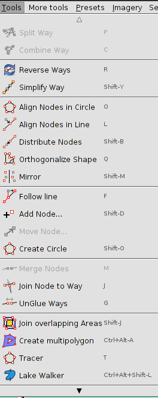In order to apply the functions in this menu, you must first select a point, line or shape in the map window. Some of the most useful functions are described here:
Split Way¶
This allows you to divide a line into two separate lines. This is useful if you want to add different attributes to different parts of a road, such as a bridge. To use this function, select a point in the middle of the line that you want to split, go to and your line should be split in two.
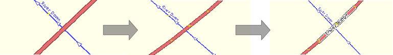Combine Way¶
This does the opposite of Split Way. To combine two lines into a single line, they must share a single point. To use this function, select both lines that you want to combine. You can select more than one object by holding the SHIFT key on your keyboard and clicking on each line. When you have selected both lines, go to .
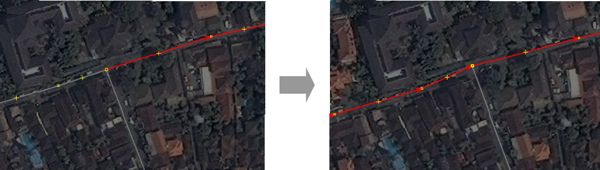Note that you if are combining roads that have different directions, you might get this warning:
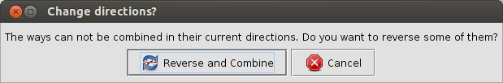If the roads are connected and go in the same direction, click Reverse and Combine.
Reverse Way¶
This will change the direction of the line. If the line incorrectly represents a road or river that is one-way, you may want to change its direction. Unless someone has intentionally created a way to be one way you do not usually have to worry about altering the direction because ways in OSM default to represent both directions.
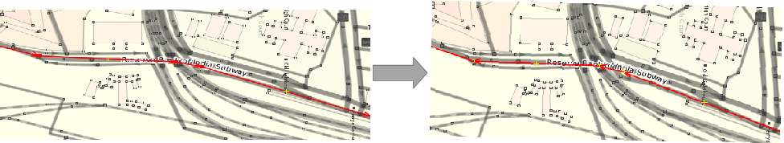Simplify Way¶
If your line has too many nodes in it and you’d like to make it simpler, this will remove some of the points from a line.
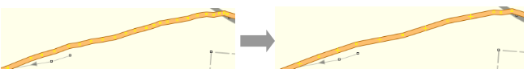Create Circle OR Align Nodes in Circle¶
If you are trying to make a circular shape, draw the circle as best you can and then select three nodes and the function. It will help arrange your points in a circle.
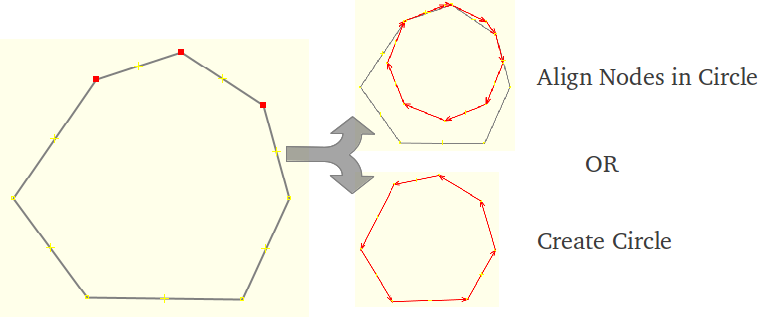Align Nodes in Line¶
This function will align a series of points into a straight line. With long lines it is best to select sections of the line to straighten. Be careful as this does have the tendency to shift the line a little.
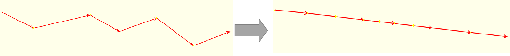Orthogonalize Shape¶
This function is very useful for drawing regular shapes such as buildings. After you draw an area, this function will reshape it to have square corners. This feature is most useful for other regularly shaped features, such as tennis courts or landuse areas (Using the Building Plugin, which is explained below, might be easier for buildings).
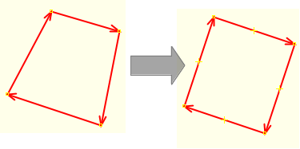Unglue Ways¶
This tool allows you to detach nodes that are connected.
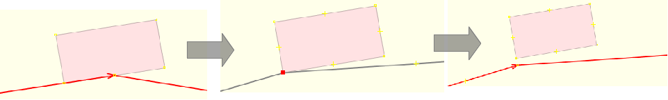Note
The line and node will not actually appear separate as the last screenshot implies.
1.2 Plugins¶
Building Plugin¶
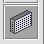This plugin is by far one of the most useful tools for editing (digitising). Install it as with any other plugin. It will appear as an icon on the left hand toolbar. The functionality of this tool is explained here:
The Building tool allows you to create shapes with 90 degree corners with just three clicks. First, trace the edge of the building and then drag out the line to make it a polygon.
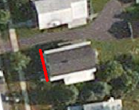 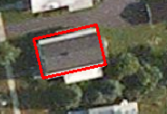You can also create more complicated buildings by using the merge option. Create your building outline, select all of the polygons (press SHIFT to highlight them all) and then press SHIFT + J to merge the objects.
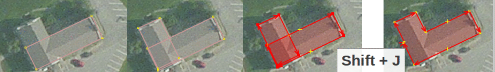Furthermore, you can also change the default settings (size of building and default tags) by going to .
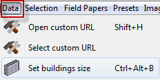This is useful if you are drawing many buildings of a known dimension (such as five by six metres). If you are mapping infrastructure which requires tags other than building=yes, you can set the desired default tags by going to Advanced….
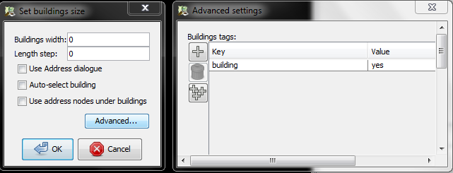Utilsplugin2 (More Tools)¶
The plugin utilsplugin2 has several features that are also useful for editing.
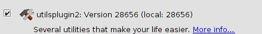After you install this plugin, a new menu will appear called .
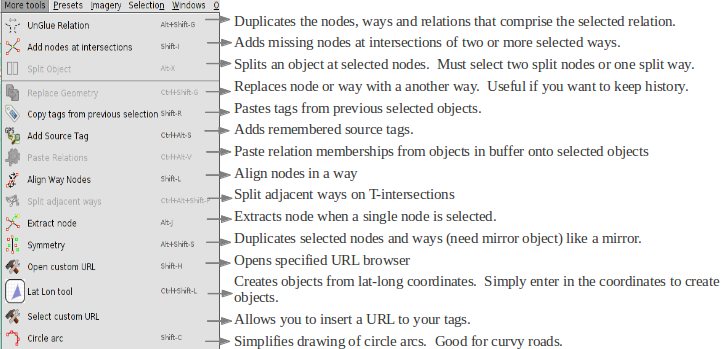The following tools are some of the most useful:
Add Nodes at Intersections¶
This tool is helpful for adding missing nodes in intersections of selected ways. It is good practice that roads and rivers should always have common nodes where they intersect.
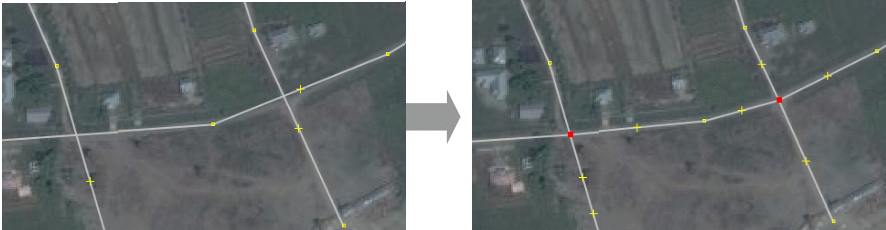Add Source Tag¶
This tool simplifies adding a source tag. It remembers the source that was specified last and adds it as remembered source tag to your objects. You can insert the source with just one click.
Replace Geometry¶
This tool is great if you want to redraw a poorly shaped object, but want to keep the history, attributes and ID number of that object. For example, if you come across a building that is complicated and drawn in a poor fashion, then instead of painfully changing each node, you can (2) just draw the object again (3) select the old and new object (4) press Replace Geometry to transfer all the information over.
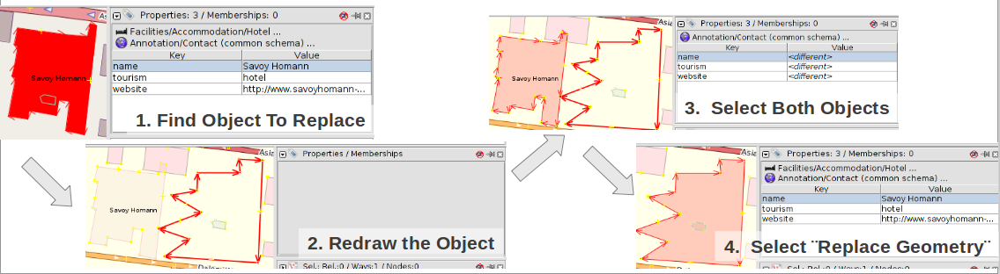Utilsplugin2 also provides a new selection menu that provides more tools:
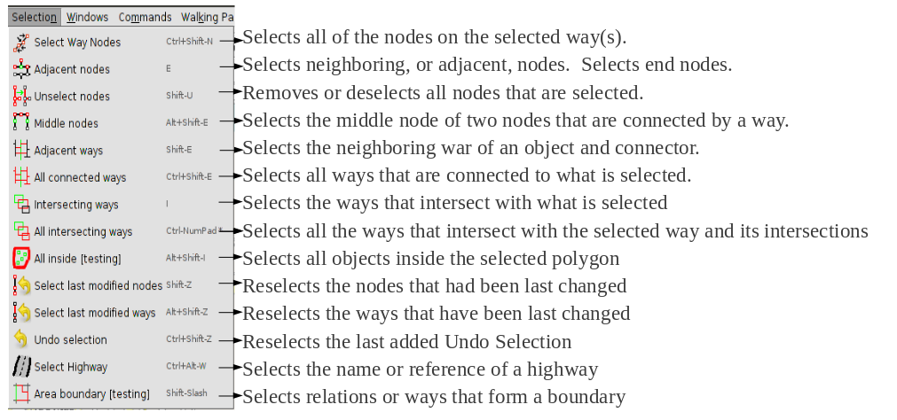These tools are some of the most useful:
Unselect Nodes¶
This tool allows you to deselect nodes, which makes it useful for tagging the objects selected. This tool is necessary if you have mapped several polygon objects with similar attributes and would like to tag the objects without tagging the nodes. To do so, select all of the objects - polygons, ways and relations. Then unselect the nodes and tag appropriately.
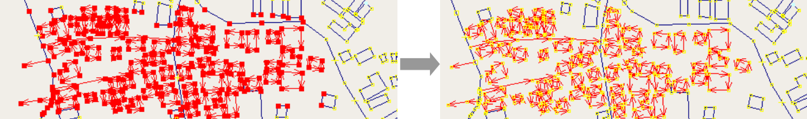Select Last Modified Nodes¶
This tool permits you to go back to the nodes that you most recently changed.
2. Relations¶
In the first unit we learned that there are three types of objects that can be drawn in OSM - points (nodes), lines (ways) and polygons. Lines contain numerous points, and the line itself carries the attributes that define what it represents. Polygons are the same as lines, except that the the line must finish where it begins in order to form a shape.
In fact, there is one other type of object in OSM, and these are called relations. In the same way that a line consists of other points, a relation contains a group of other objects, be they points, lines or polygons. If you are looking to obtain advanced editing skills, then understanding and knowing how to properly edit relations is important.
For example, imagine that you want to map a building that has courtyards in the centre. You would need to draw a polygon around the outside of the building, and you would need other polygons around the courtyards to indicate that they are not part of the building. This is an example of a relation. The relation would contain several polygons - and the attributes of the building would be attached to the relation, not the polygons.
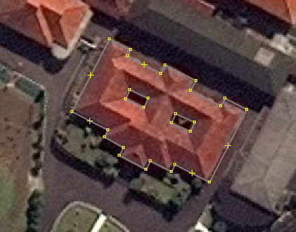Relations are used to represent anything that requires a collection of objects to define. Other examples are bus routes (a collections of lines), long and complex objects (rivers or roads), or multiple polygons that are all part of one location (like buildings in a university).
There are mainly four types of relations you will encounter in OSM: Multipolygons, Routes, Boundaries and Restrictions. In this section we will go over Multipolygons and Routes.
2.1 Editing relations¶
The multipolygon above contains a polygon for the outer limits of the building and two more to mark the inner courtyards. To create a relation from these three polygons we need to:
Select all of the polygons.
Go to
The polygons should automatically be created as a multi-polygon.
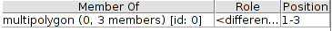Click the Edit button in the Tags tab.
This opens the relation editor. Notice that in the lower-left corner is a list of the members of the relation. One has been automatically defined with the role of “outer” (the outer polygon), and the other carries the role of “inner.”
At the top are a list of the tags applied to this relation. Right now only one tag exists, type=multipolygon. This tag indicates what type of relation the object is.
Click beneath it and add one more tag: building=yes.
Click OK. The object will change colours and will now appear as a building, but with a courtyard.
The data behind the relation in our example is visible on OSM: You can see this multipolygon on OSM by going to http://www.openstreetmap.org/browse/relation/2435797. It will appear on OSM like this:
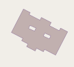2.2 Another multipolygon¶
The river below is another example of a multipolygon. Effectively it is the same as the building example, but with a greater number of members and covering a much larger area. It can be viewed on OSM here: http://www.openstreetmap.org/browse/relation/1046961.
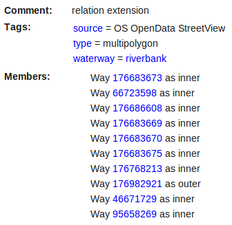 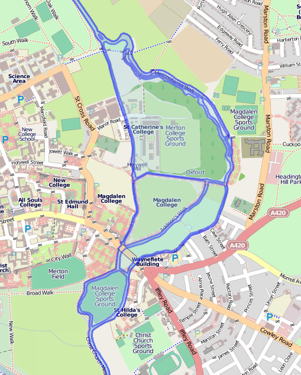This river contains ten ways that are connected like a long polygon.
2.3 Linestring relations¶
Relations are also very useful for creating, labeling and editing large linestrings; for example, bus routes, hiking trails, bicycle paths, etc. These differ from multipolygons because they are relations with members, as supposed to complex areas. A linestring could simply be one line with multiple members. Additional features, such as bus stops represented by separate nodes can also be tagged as relation members.
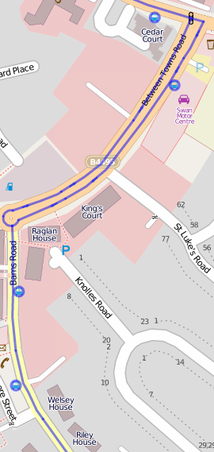 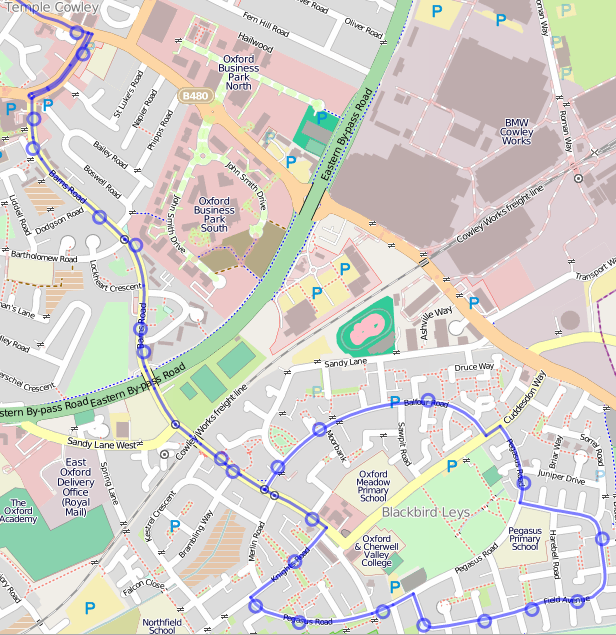To create a linestring relation:
Make sure that all of the ways in which the route runs along are appropriately tagged. For example, highway=footway.
Select all of the highways or ways that are part of the bus route. If you would only like to select certain parts of a way, then you must divide the way into sections. This creates more work, but you can easily do it with the Split Way tool.
Go to .
Fill in the information about the bus route and click New relation.
Relations are difficult to understand and do not have to be used often, but they are necessary to know about. As you get more developed with your OSM skills and want to create more complex buildings, rivers and routes, relations will be useful.